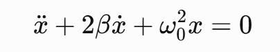
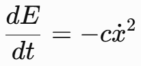
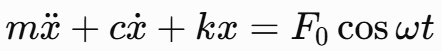
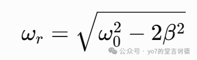
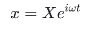
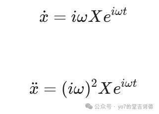
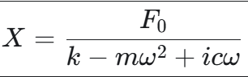
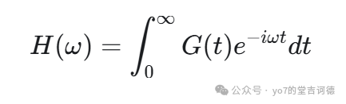
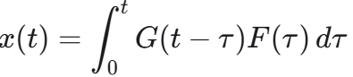
一个力从原来的作用点A移到O，大小和方向保留，同时要加上它原来对O的力矩，这样才能保持整体受力效果
这里的OA从O指向A，顺序不能反过来。如果只是沿原作用线移动，两个向量平行，叉积为零，就不用增加力偶了
对于多个力，分别移过来再相加，可以得到一个合力和一个主矩，原来已有的力偶也要一起算进去
这样就把分散的载荷整理成了六个分量，但这六个数只描述整体，具体哪条腿、哪颗螺栓承担多少，还需要往下研究
先看起重机，四个支腿的坐标如下，单位是m，地面水平，z轴向上
自重700 kN，重心在中心；吊重300 kN，水平位置在（7，1.5）。还有一个风力（40，20，0）kN，作用高度为10 m，水平位置在中心
把这些载荷移到中心，可以得到下面的结果，水平力由地面约束承担，这里只计算竖向反力
四个支腿的向上反力记为Ni，列出竖向力平衡和两个倾覆方向的力矩平衡，就有
令A腿反力为t，其他反力可以跟着变化，下面数值取近似
比如A增加一点，B和C减少同样的量，D增加同样的量，三个平衡方程仍然成立，所以平衡本身还不能确定这个t
那就需要看看变形了。把底盘看作刚体，支腿和地基的竖向弹性看作弹簧，先假设四腿全部接触、初始同高且没有间隙
刚体可以下沉和倾斜，但四个角不能各自任意升降，竖向位移应当落在同一个平面上
代入四个角，就能发现两组对角的位移和相同，因为两条对角线的中点是同一个点
再假设四腿有效刚度相同，都是k，压缩取正，支腿反力与压缩量的关系为
于是位移关系可以变成反力关系，缺少的第四个方程就出现了
把前面的t代进去，算出A腿反力为负。这个负号表示四腿接触的假设要求A腿提供拉力，但普通支腿不能拉住地面
所以要让A腿脱空，取NA＝0，然后重新解平衡方程，不能只把负数删掉，其他三个反力保持原样
底盘仍然保持平面，用另外三腿的压缩量反推A角位移，可以得到
负压缩量表示A角向上离开支承位置，另外三腿反力为正，仍然承压，这样接触假设也与计算结果对应上了
还有一个容易混在一起的地方，脱空不等于立即倾覆。本题反力合力的作用点为（2.5，0.65）m，仍在BCD支承三角形内，所以还存在静力平衡
如果只改变吊重的纵向位置，保持其他条件不变，首次脱空发生在5.42 m，右侧支承边的几何倾覆边界在8.67 m，两者对应不同的状态
这里的几何边界也不能直接当成允许工作幅度，实际还要检查额定起重量、结构和地基承载力等条件
https://ntrs.nasa.gov/citations/19900009424
换成连接板，思路其实相通。板位于z＝0平面，八颗螺栓的坐标由下面的组合构成，单位还是m
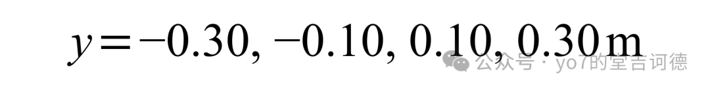
设备在P点受到一个力，还受到一个外加力偶，＋z是连接板被拉离基础的方向
先把力移到螺栓组中心，附加力矩与原来的力偶相加，得到
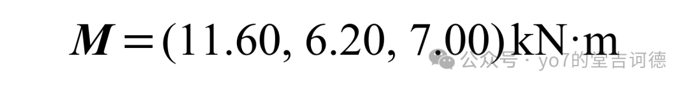
120 kN可以产生平均拉力，但Mx和My还会使板倾斜，各螺栓的伸长量不同，拉力就不能全部取120除以8了
这里仍取刚性板，各螺栓的轴向刚度相同、剪切刚度也相同，剪力由螺栓承担，暂不计摩擦、预紧力和撬力
与支腿类似，位移协调使拉力呈线性分布，再结合力和力矩平衡，可以得到
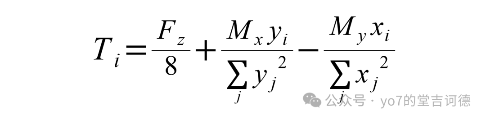
本题对称，三个几何量为
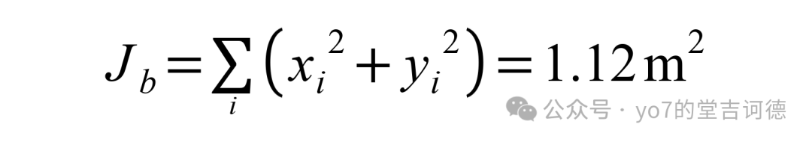
代入拉力公式，坐标以m计，结果以kN计
因此最大拉力出现在（－0.30，0.30），算得26.283 kN，最小拉力为3.717 kN，各螺栓计算拉力均为正
再看剪力，除了Fx和Fy的直接分配，Mz还会使板绕中心转动，产生切向附加剪力，两个部分需要按方向相加
代入数值，仍以外载分配方向记剪力，螺栓对板的反力方向与其相反
逐颗计算，最大剪力出现在（－0.30，－0.30），为5.376 kN。最大拉力那颗螺栓的剪力则是3.187 kN，两个最大值没有落在同一个位置
所以还要看拉剪组合，不能把不同螺栓的两个最大值直接拼成一颗螺栓的受力状态。这里为算例指定容许拉力30 kN、容许剪力12 kN，并采用
逐颗校核，最大值出现在拉力最大的那颗螺栓上，满足本题给定条件
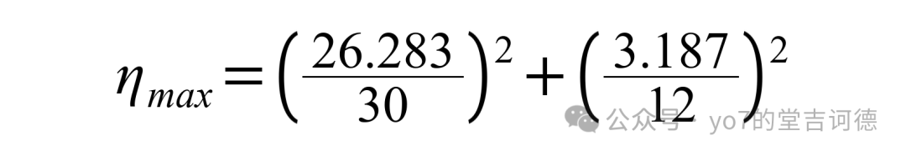
如果全部力和力偶同比例放大α倍，拉力、剪力也放大α倍，η就放大α²倍，所以达到这个组合边界时
对应载荷增加约9.2%，不是用1减去0.838，因为这里已经是平方关系了
这两个问题都先用了整体等效，但求局部分配时，又加上了位移协调和刚度。对于刚体，整体载荷可以通过虚功写成
也就是对任意微小平移和转动，相同的合力、主矩会做相同的功，这给静力等效提供了一个解释
但如果物体还会弯曲和伸长，只知道这些整体信息就不够了。比如一根12 m简支梁承受10 kN/m均布荷载，换成跨中120 kN集中力，两端反力相同，最大弯矩却不同
均布荷载
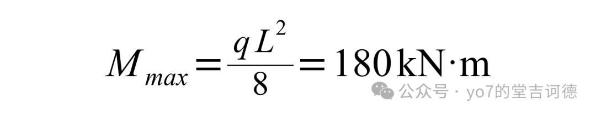
集中荷载
所以求整体平衡可以先简化，求截面内力则要保留实际载荷分布。同样，支腿和螺栓的局部反力，也需要它们自己的变形和接触信息
如果刚度变了，就重新使用各自的力—变形关系；如果接触状态变了，就检查原来的关系是否还能用。尤其算出负反力的时候，可以先回头看看这个支承到底能不能承担拉力
三。严肃学习对照片取对数
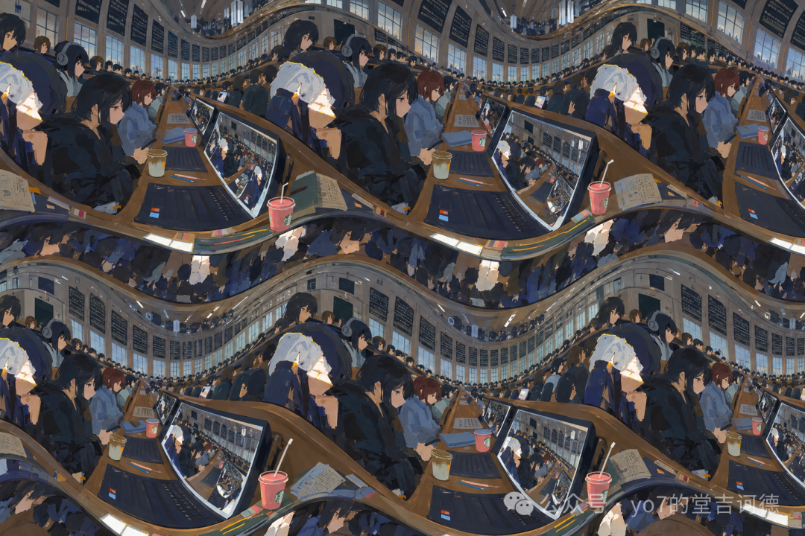